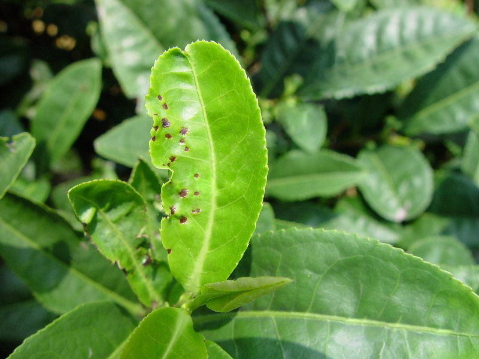
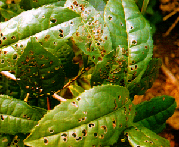

茶圆赤星病是由茶尾孢引起的、发生在茶的病害。主要发生在茶的嫩叶和成叶上，嫩茎、叶柄上也可发生。病部初生褐色小点，以后逐渐扩大成圆形病斑，中央凹陷，呈灰白色，边缘有暗褐色至紫褐色隆起线；病斑直径为0.8-3.5毫米，中央散生黑色小点；潮湿时，斑上有灰色霉层。
茶圆赤星病是危害茶树芽叶主要病害之一，主要发生在高湿、多雾的茶园，早春发生严重，发病茶园呈现一片紫褐色，病叶大量脱落，致使树势衰弱，用病叶制成的红条茶破碎率高，汤色混暗，味苦涩，该病对茶叶品质影响很大
茶圆赤星病的防治应该重点关注春季多雨、光照较少的季节。掌握病害发生发展的动态规律，是做好防治工作的前提。
茶圆赤星病主要发生在茶的嫩叶和成叶上，嫩茎、叶柄上也可发生。病部初生褐色小点，以后扩展成灰白色中间凹陷的圆形病斑， 大小为0.8-3.5毫米，边缘具暗褐色或紫褐色隆起线，中央红褐色，后期病斑中间散生黑色小点，即病原菌的菌丝块，湿度大时， 上生灰色霉层，即病原菌的子实层。叶柄、嫩梢染病产生类似的症状。
病菌以菌丝体在茶树上病叶及落叶中越冬，翌春条件适宜产生分生孢子，借风雨传播，侵染嫩叶、成 叶、幼茎，经几天潜育，产生新病斑后又形成分生孢子，进行多次重复侵染。
茶圆赤星病在月均温度16-23℃，相对湿度80%以上时最容易严重发生。茶的病虫害的发生与气象条件有密切的相关， 气候条件影响着茶树主要病虫害的发生发展。因此，春茶和秋茶期间，连续两个月高湿少光须特别注意，日照时数与降水量影响茶圆赤星病发病率增加。降水量多、日照少， 有利于茶圆赤星病病原体繁殖与传播，导致茶圆赤星病发病率上升。相反，降水量少、日照多，则不利于茶圆赤星病病原繁殖，发病率降低。
农业防治：选用抗病品种。如果出现连续两个月低温、高湿、少光的气候环境，须加强对茶圆赤星病防治工作； 特别是春茶采摘期间3-4月份，若有日平均气温只有15-20℃，相对湿度80%以上，日照时数每天少于2小时左右， 就要采取相应的防治措施，尤其是大龄树要加强茶园各项管理，应该合理修剪、勤除茶园杂草， 以利通风透气，并合理施肥，注重氮、磷、钾肥配合，提高抗病力。做好清排渍工作，降低地下水位，雨后及时排水；做好防寒工作，防止冻害发生，以减轻发病。
化学防治：春季采摘前或早春、晚秋发病初期及时喷雾70%甲基硫菌灵可湿性粉剂1000倍液（安全间隔期10天）， 或50%苯菌灵可湿性粉剂1500倍液（安全隔期7-10天），或75%百菌清可湿性粉剂800倍液（安全间隔期10天）。 非采摘茶园也可用0.7%石灰半量式波尔多液或12%松脂酸铜乳油600倍液。